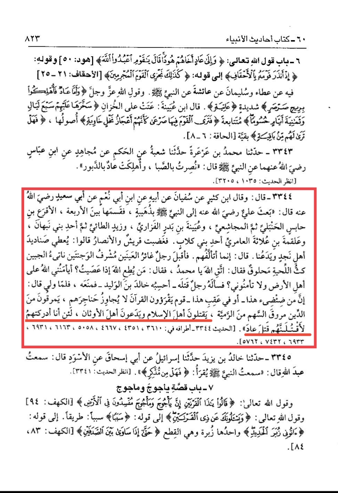
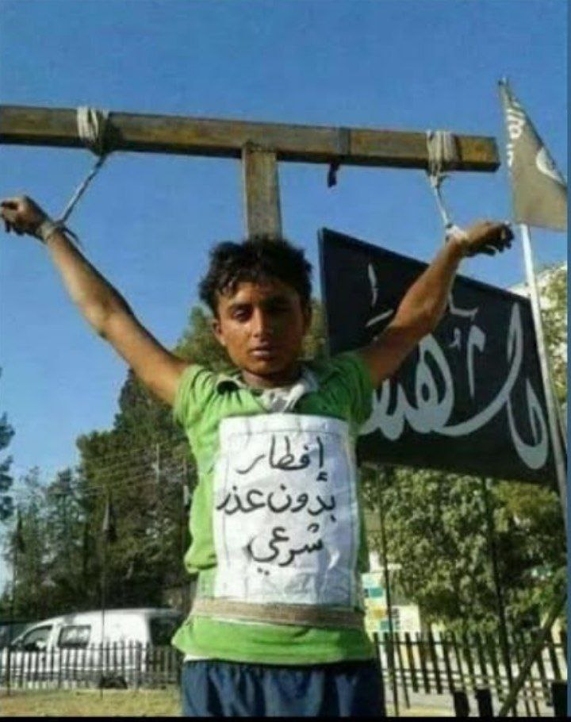
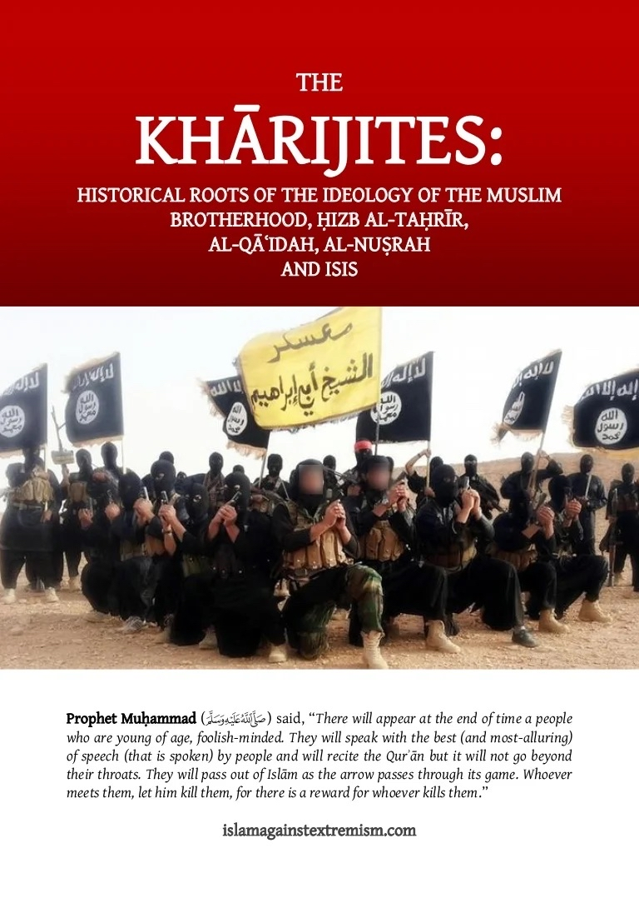
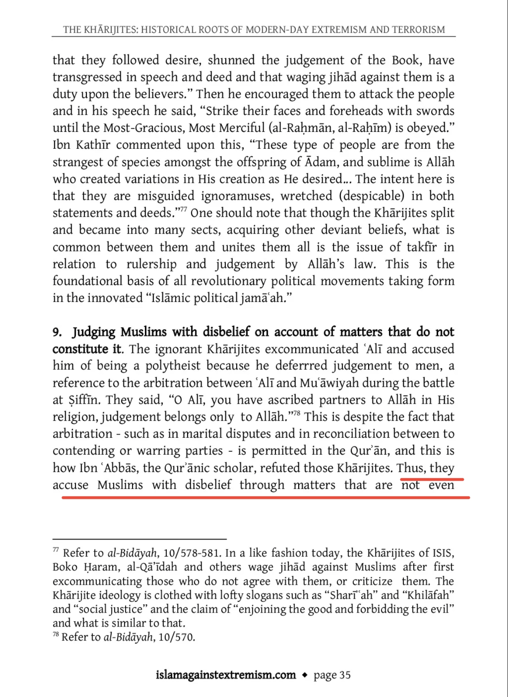
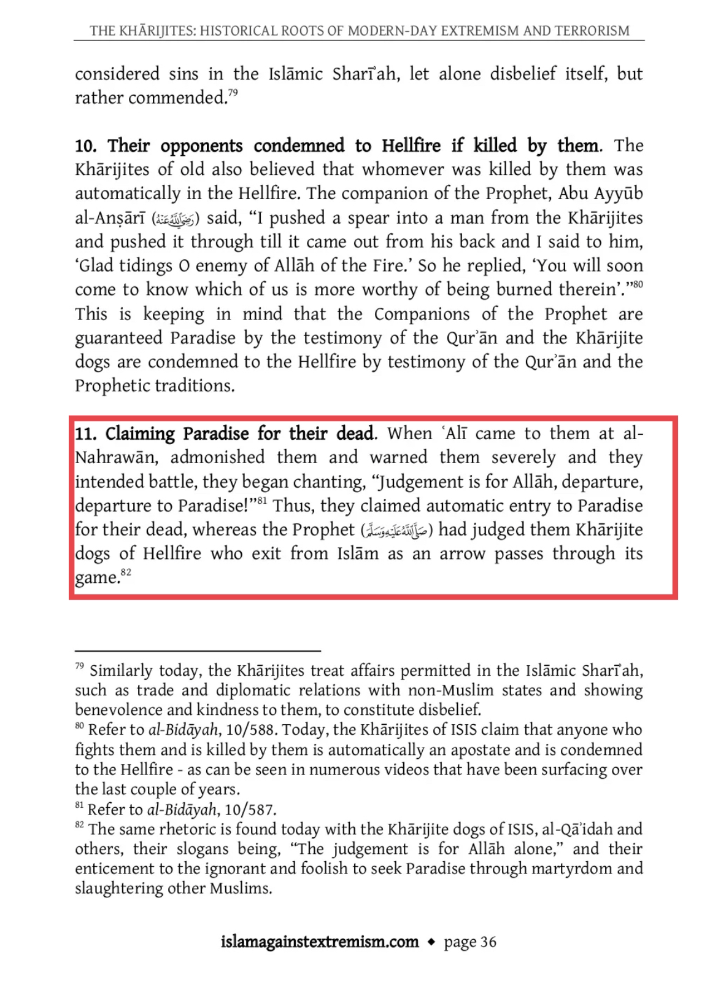
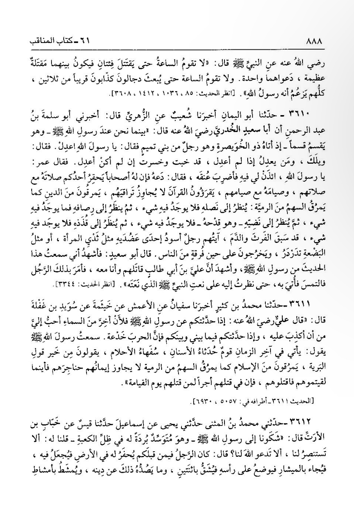
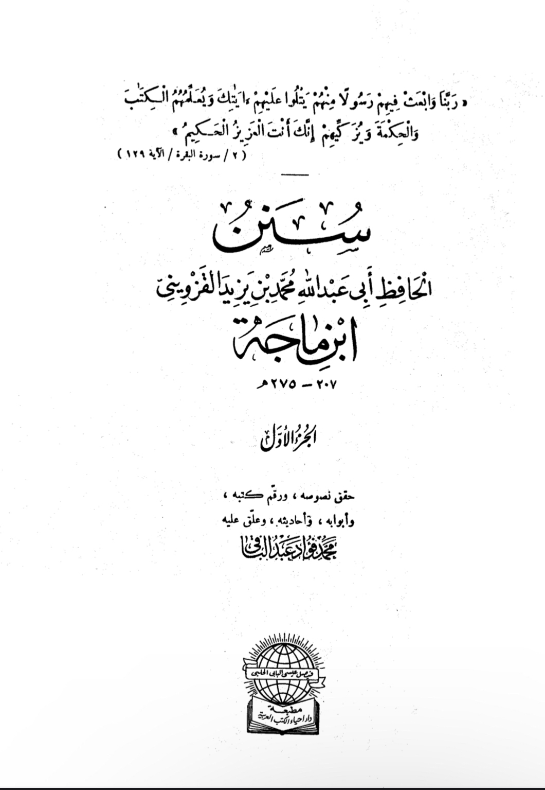
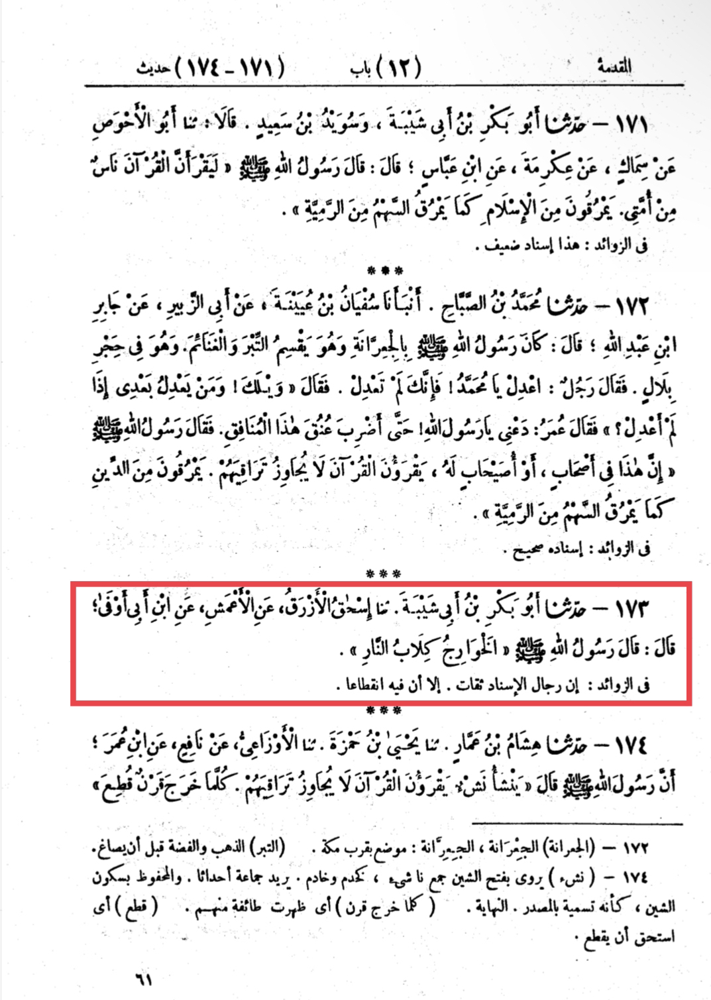

Khawarij
1. We call them Khawarij because the Characteristics of the Khawarij is they kill Muslims and attack them the most. That’s why we dislike isis.

The Messenger of Allah said:
“They will kill the Muslims but will not disturb the idolaters. If I should live up to their time' I will kill them as the people of 'Ad were killed (i.e. I will kill all of them)."

This kid was crucified by daesh in Al raqqa, their reason was "he broke his fast".
2. another reason we call them Khawarij is because the Characteristics of the Khawarij is they takfir Muslims themselves without any true daleel of them being disbeliever.


Daesh takfiring the whole of the Syrian people and calling them kaffirs, this is a extremist ideology especially analyzing the fact that majority of Syrians are believers.
3. another reason we dislike isis is because they lie about Islam and the prophets words. Most of the when they are recruiting they gather young men and women lie to them,
such saying “you will have 72 virgins” lying to their men, or saying to the women if you join our groups Allah will reward you give you XYZ for this.

They make fake promises lying about stuff to gather young men and women

I heard Allah's Messenger (ﷺ) saying, "In the last days of this world
there will appear some people among you who are young in age, immature and senseless; they will use the best of the speech of the people in their claims,
and they will leave Islam just as the arrow pierces the body of the game and then abandons it. Their faith will not go past their throats, so wherever you see them,
kill them; for their killing will be recompensed and rewarded on the Day of Judgement. (Bukhari)
I forgot to highlight it, it’s [sahih bukahri 3611] this is the characteristics of isis that they use immature young people for their jobs,
and the prophet has told us about these people. So as Muslims we don’t condone any of their actions
This is what our prophet said about the Khawarij.


Sunan Ibn Majah 173
It was narrated that Ibn Awfa said:
"The Messenger of Allah said: 'The Khawarij are the dogs of Hell.'"
حَدَّثَنَا أَبُو بَكْرِ بْنُ أَبِي شَيْبَةَ، حَدَّثَنَا إِسْحَاقُ الأَزْرَقُ، عَنِ الأَعْمَشِ، عَنِ ابْنِ أَبِي أَوْفَى، قَالَ قَالَ رَسُولُ اللَّهِ ـ صلى الله عليه وسلم ـ " الْخَوَارِجُ كِلاَبُ النَّارِ " .
4. Daesh aren’t a Khilafah
It is agreed by ‘Ijma of the ‘Ulama that a Khilafah to be recognised the majority of the ppl of Aql or the people of knowledge needs to give Bayah to the ruler,
and has Daesh been given this Bayah? No, the majority of the Scholars reject them and many also label them as Khawarij like Shaykh Salih Ibn Fawzan al Fawzan حفظه الله
The Khilafah also needs to control most of the parts of where the Muslimeen lives,
when Abu Bakr as Sidiq رضي الله عنه ruled over the Muslimeen he controlled the part where All Muslimeen lived
The belief is that the majority needs to be controlled under it, if they don’t control most of the Muslimeen then this state is recognised as a Wilayah
The Ottoman Empire after controlling a lot of land claimed to be a Khilafah and this is rejected by the ‘Ulama (Ikhtilaf)
that Ottoman was a Khilafah rather it was a Wilayah of just a simple Dawla of the Muslimeen
إن شاء الله
All of you guys have understood this matter and that I have been clear and not misguided any of my fellow Muslim brothers
بارك الله فيك